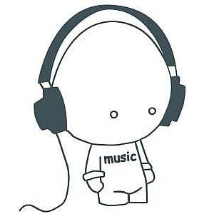

<!DOCTYPE html>
<html lang="en">
<head>
	<meta charset="UTF-8">
	<title>豆瓣音乐</title>
	<link rel="icon" href="images/favicon.ico">
	<link rel="stylesheet" type="text/css" href="css/musicindex.css">
	<script src="http://o7m41tvmg.bkt.clouddn.com/jquery-1.12.4.min.js"></script>
</head>
<body>
	<!-- 播放器界面 start-->
	<!-- <div id="wx_logo">
		
	</div> -->
	<div class="wrapper">
		<!-- 背景图片 -->
		<div class="background">
			<div class="music-lyric">
				<div class="lyric-view">
					<ul class="lyric"></ul>
				</div>
			</div>
		</div>
		<div class="content">
			<!-- 播放源及音乐信息 -->
			<audio src=""></audio>
			<div class="music-massage">
				<p class="musicname"></p>
				<p class="musicer"></p>
				<p class="record"></p>
			</div>
			<!-- 分享，收藏，喜欢按钮 -->
			<div class="music-icon">
				<a class="m-icon m-fenxiang colored" href="http://service.weibo.com/share/share.php?title=#_loginLayer_1466697157538" target="new"></a>
				<span class="m-icon m-star colored"></span>
				<span class="m-icon m-loved colored"></span>
			</div>
		</div>
		<!-- 进度条 -->
		<span class="basebar">
			<span class="progressbar"></span>
		</span>
		<!-- 音乐播放控制 -->
		<div class="controls">
			<!-- 音乐播放，换频道，下一曲按钮 -->
			<div class="play-control">
				<span class="m-icon m-play btn1" title="播放/暂停"></span>
				<span class="m-icon m-change btn2" title="换频道"></span>
				<span class="m-icon m-next btn3" title="换曲"></span>
			</div>
			<!-- 循环播放，随机播放按钮 -->
			<div class="music-control">
				<span class="m-icon m-xunhuan colored"></span>
				<span class="m-icon m-lyric colored"></span>
			</div>
		</div>
	</div>
	<script src="js/Random-music.js"></script>
</body>
</html>